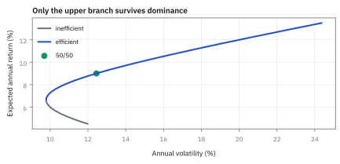
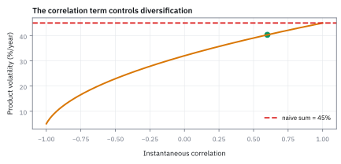
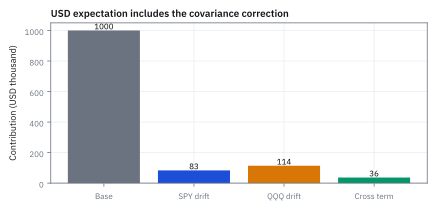

12.5 Multidimensional Itô and the Product Rule
เมื่อแรงกระแทกสองตัวมาพร้อมกัน
note ตัวอย่างจ่าย \$1,000,000 คูณผลตอบแทนสะสมของ SPY คูณของ QQQ ในหนึ่งปี แบบจำลองให้ SPY โต 8% เหวี่ยง 20% ให้ QQQ โต 10% เหวี่ยง 25% และ correlation 0.60 ค่าเฉลี่ยของเงินที่จ่ายคือเท่าไร?
เฉลย: \$1,233,678 เพราะผลคูณโตเฉลี่ย 21% ต่อปี ไม่ใช่ 8% + 10% = 18% ซึ่งจะให้แค่ \$1,197,217 ส่วนต่าง \$36,461 มาจากการที่สองตัวขยับไปด้วยกัน และความผันผวนของผลคูณคือ 40.31% ไม่ใช่ 45%
calculus ปกติทิ้งผลคูณของการขยับสองตัว แต่เมื่อทั้งคู่สุ่ม ผลคูณนั้นมีขนาดเท่าเวลา Itô ฉบับหลายมิติเก็บมันไว้
ศัพท์ที่ใช้ในหัวข้อนี้
- multidimensional Itô formula
- chain rule สำหรับ function ของ random variable หลายตัว ที่เก็บผลคูณของการขยับทุกคู่ไว้ ใช้หาการเคลื่อนที่ของตะกร้าสินทรัพย์ อัตราส่วน และสัญญาที่อ้างอิงหลายตัว
- Itô product rule
- กฎหาการเปลี่ยนของผลคูณที่มีพจน์ dX dY เพิ่มจากกฎปกติ ใช้หาค่าเฉลี่ยและความเสี่ยงของผลคูณของสองตัวที่สุ่ม
- correlation
- ตัวเลขระหว่าง −1 ถึง 1 ที่วัดว่าแรงกระแทกสองตัวไปทางเดียวกันแค่ไหน ใช้กำหนดขนาดของพจน์ไขว้
- covariance
- correlation คูณความผันผวนของทั้งสองตัว ใช้เป็นขนาดของพจน์ไขว้ในค่าเฉลี่ยและ variance
- total-return factor
- มูลค่าสะสมที่เริ่มที่ 1 และรวมทั้งราคากับเงินปันผล ใช้เทียบสินทรัพย์ที่ราคาต่างระดับกันในสัญญาเดียว
- notional
- มูลค่าอ้างอิงที่เอาไปคูณตัวเลขไร้หน่วยให้เป็นเงิน ใช้แปลงผลคูณเป็นจำนวนดอลลาร์ของ note
- SPY และ QQQ
- กองทุนสหรัฐที่ติดตามดัชนี S&P 500 และ Nasdaq-100 ใช้เป็นสองสินทรัพย์ของตัวอย่าง ไม่ใช่คำแนะนำลงทุน
- quanto option
- option ที่อ้างอิงหุ้นต่างประเทศแต่จ่ายเป็นสกุลเงินบ้าน ใช้เป็นตัวอย่างจริงที่ผลคูณของราคากับอัตราแลกเปลี่ยนต้องมีพจน์ไขว้
- Jensen's inequality
- ผลที่ว่าค่าเฉลี่ยของ function ที่โค้งหงาย มากกว่า function ของค่าเฉลี่ย ใช้อธิบายว่าทำไมหนึ่งส่วนราคามี drift เพิ่ม
- risk-neutral measure
- ชุดน้ำหนักโอกาสสำหรับตั้งราคา ที่ทำให้ราคาคิดลดเป็น martingale (หัวข้อ 12.6) ใช้แทน drift ของโลกจริงเมื่อจะตั้งราคาสัญญา
สัญลักษณ์ที่ใช้ในหัวข้อนี้
| สัญลักษณ์ | ความหมาย | หน่วย |
|---|---|---|
| $X_t$, $Y_t$ | ผลตอบแทนสะสมของ SPY และ QQQ เริ่มที่ 1 | ไม่มีหน่วย |
| $V_t$ | ผลคูณ $X_tY_t$ | ไม่มีหน่วย |
| $Z_t$ | อัตราส่วน $X_t/Y_t$ | ไม่มีหน่วย |
| $N$ | notional ของ note | USD |
| $\mu_X$, $\mu_Y$ | drift ต่อปีของแต่ละตัว | 1/ปี |
| $\sigma_X$, $\sigma_Y$ | volatility ต่อปีของแต่ละตัว | $1/\sqrt{\text{year}}$ |
| $W^X_t$, $W^Y_t$ | Brownian motion ที่ขับแต่ละตัว | $\sqrt{\text{year}}$ |
| $\rho$ | correlation ของแรงกระแทกสองตัวในทุกช่วงสั้น ๆ | ไม่มีหน่วย |
| $\mu_V$, $\sigma_V$ | drift และ volatility ของผลคูณ | 1/ปี, $1/\sqrt{\text{year}}$ |
ที่มาที่ไป: เมื่อความสุ่มมาจากหลายทางพร้อมกัน
หัวข้อก่อนหน้ามีแหล่งความสุ่มแหล่งเดียว ซึ่งพอสำหรับสินทรัพย์ตัวเดียว แต่งานจริงแทบไม่เคยมีตัวเดียว สัญญาที่อ้างอิงสองสินทรัพย์ พอร์ตที่มีทั้งหุ้นและอัตราแลกเปลี่ยน ล้วนมีความสุ่มหลายทางพร้อมกัน
Kiyosi Itô ขยายกฎไปหลายมิติราวปี 1951 ในตลาด ความจำเป็นนี้เกิดทันทีเมื่อถือหุ้นต่างประเทศ หรือทำ quanto และ basket option ซึ่งต้องคูณราคาหุ้นด้วยอัตราแลกเปลี่ยน ก่อนหน้านั้นหลายคนบวก drift ของสองตัวตรง ๆ ซึ่งผิดเมื่อสองตัวขยับไปด้วยกัน
ขั้นที่ 1 — หนึ่งก้าวด้วยมือ: ผลคูณของสองตัวที่ไม่มี drift เลย
สองตัวเริ่มที่ 1 แต่ละตัวขึ้นหรือลง 10% อย่างละครึ่ง ค่าเฉลี่ยของแต่ละตัวจึงไม่ขยับ ดูค่าเฉลี่ยของผลคูณในสามกรณี
แต่ละตัวเฉลี่ยไม่ขยับ แต่ผลคูณขยับได้ ขึ้นพร้อมกันได้ 1.21 ลงพร้อมกันได้ 0.81 ค่าเฉลี่ยจึงเกินหนึ่ง 1% ส่วนสวนทางกันเสียเสมอ 1% พจน์ที่เกินมาคือ correlation คูณความผันผวนของทั้งสองตัวพอดี
ขั้นที่ 2 — ของที่โจทย์ให้: สองตัวแบบ GBM ที่แรงกระแทกเกาะกัน
แต่ละตัวเป็น Geometric Brownian Motion (GBM) แบบหัวข้อ 12.2 ของใหม่มีบรรทัดเดียว คือผลคูณของการขยับสองแรงให้ correlation คูณเวลา
บรรทัดขวาคือกฎของหัวข้อ 12.1 ฉบับสองตัว ถ้าสองแรงเป็นแรงเดียวกัน correlation เป็น 1 ก็ย้อนกลับไปเป็น (dW)² = dt ถ้าไม่เกี่ยวกันเลย ผลคูณเป็นศูนย์
ขั้นที่ 3 — กระจายผลคูณ: พจน์ที่สามทิ้งไม่ได้
เขียนค่าใหม่ลบค่าเก่าของผลคูณแล้วกระจายวงเล็บ ขั้นนี้ยังไม่ใช้สมบัติอะไรของ Brownian motion ไม่มีการประมาณเลย
ใน calculus ปกติ พจน์ที่สามถูกทิ้งเพราะเป็นของเล็กคูณของเล็ก แต่การขยับแบบสุ่มมีขนาดรากของเวลา ผลคูณของสองอันจึงมีขนาดเท่าเวลา ซึ่งทิ้งไม่ได้
ขั้นที่ 4 — คำนวณพจน์ไขว้
คูณสองสมการของขั้นที่ 2 ได้สี่พจน์ แล้วใช้ตารางคูณของหัวข้อ 12.2 ตัดสามพจน์ที่เล็กเกินไป
เหลือพจน์เดียวที่เป็นผลคูณของสองแรงสุ่ม และเป็นสัดส่วนกับ correlation ตรง ๆ ถ้าสองตัวไม่เกาะกัน พจน์นี้หายไป ตรงกับกรณีไม่เกี่ยวกันของขั้นที่ 1
ขั้นที่ 5 — การเคลื่อนที่ของผลคูณ
แทนทุกพจน์ลงในกฎของขั้นที่ 3 ให้มี $X_tY_t$ เป็นตัวร่วม แล้วเอามันหารทั้งสมการ
ผลคูณก็เป็น GBM อีกตัว แต่ drift ไม่ใช่แค่ผลบวก มีพจน์ covariance เพิ่มเข้ามา ซึ่งไม่มีใครใส่เข้าไป มันงอกออกมาจากพจน์ที่ calculus ปกติทิ้ง
ขั้นที่ 6 — รวมสองแรงสุ่มเป็นความผันผวนเดียว
สองแรงสุ่มรวมเป็นแรงเดียวได้ แต่ขนาดต้องรวมแบบ variance ไม่ใช่บวกตรง ๆ เป็นเรื่องเดียวกับความเสี่ยงพอร์ตในหัวข้อ 6.8
แต่ละแรงมี variance เท่ากับเวลา และคู่ของมันมี covariance เท่ากับ correlation คูณเวลา ตัดเวลาทิ้งทั้งสองข้าง ถ้าสองแรงสวนกัน ขนาดรวมอาจเล็กกว่าแต่ละตัว นั่นคือเหตุที่พอร์ตซึ่งถือของสวนทางกันเหวี่ยงน้อยกว่า
ขั้นที่ 7 — แทนตัวเลขของ desk
SPY โต 8% เหวี่ยง 20% QQQ โต 10% เหวี่ยง 25% correlation 0.60 คำนวณพจน์ไขว้ก่อน เพราะเป็นพจน์เดียวที่ไม่ได้มาจากตัวใดตัวหนึ่ง
พจน์ไขว้ 3% อยู่ทั้งใน drift และใน variance ถ้า correlation เป็นศูนย์ มันหายไปทั้งสองที่ ความผันผวน 40.31% น้อยกว่า 45% ที่ได้จากการบวกตรง ๆ เพราะการบวกตรงแอบสมมติว่า correlation เป็น 1
ขั้นที่ 8 — ค่าเฉลี่ยของเงินที่ note จ่าย เทียบกับการบวก drift ตรง ๆ
ผลคูณเป็น GBM ที่ drift 21% ค่าเฉลี่ยของ GBM โตด้วย drift เต็มตามหัวข้อ 12.2 คูณ notional แล้วเทียบกับคำตอบที่ลืมพจน์ไขว้
ลืมพจน์ไขว้เพียงตัวเดียว ค่าเฉลี่ยของเงินที่จ่ายต่ำไปกว่าสามหมื่นหกพันดอลลาร์ต่อ note หนึ่งล้าน ตัวเลขนี้ยังไม่ได้คิดลด และใช้ drift ของโลกจริง ซึ่งยังไม่ใช่ราคา
Figure 12.5a — cross variation เปลี่ยน drift

เมื่อ correlation เพิ่มจาก −1 เป็น 1 พจน์ไขว้เลื่อนอัตราโตของผลคูณได้ถึง 10 จุด การบวก drift อย่างเดียวถูกเฉพาะที่ correlation เป็นศูนย์
Figure 12.5b — volatility รวมกันแบบ vector

ที่ correlation 0.60 ความผันผวนของผลคูณเท่ากับ 40.31% ไม่ใช่ผลบวก 45% การบวกตรง ๆ แอบสมมติว่า correlation เป็น 1
ขั้นที่ 9 — ที่มาจาก Taylor สองตัวแปร
กฎผลคูณเป็นกรณีหนึ่งของ Itô หลายมิติ กระจาย Taylor สองตัวแปรถึงอันดับสอง แล้วแทน $f=X,Y$
ผลคูณเป็นเส้นตรงตามแต่ละแกน ความโค้งตามแกนเดียวจึงเป็นศูนย์ เหลือเพียงความโค้งไขว้ซึ่งเท่ากับ 1 ได้พจน์ dX dY ออกมาเองโดยไม่ต้องจำสูตรลัด
ขั้นที่ 10 — อัตราส่วนสองสินทรัพย์: หนึ่งส่วน Y เพิ่ม drift
relative performance หรืออัตราแลกเปลี่ยนคือ X หาร Y ใช้สูตรเดียวกัน ความชันและความโค้งของ X/Y มีดังนี้ แล้วเอา Z หารทั้งสมการ
หนึ่งส่วน Y โค้งหงาย ตาม Jensen's inequality จึงเพิ่ม σ_Y² เข้าไปใน drift ส่วน correlation ดึงลง calculus ปกติทำนายว่าอัตราส่วนโต −2% แต่คำตอบจริงคือ +1.25% เพราะความโค้งเพิ่ม 6.25 จุด
ความผันผวนของอัตราส่วนมี correlation เป็นลบ สองตัวที่ขยับไปด้วยกันหักล้างกันเมื่อหาร จึงเหลือ 20.6%
Figure 12.5c — กระทบยอด payoff เฉลี่ย

ค่าเฉลี่ย \$1.234 ล้าน แยกได้เป็นเงินต้น กับการโตจาก SPY, QQQ และพจน์ไขว้ พจน์ไขว้เพิ่มราว \$36k เมื่อคิดแบบคูณครบ
คำตอบ ตรวจเอง และแปลว่าอะไร
โจทย์ให้อะไรมาบ้าง: note \$1,000,000 จ่ายตามผลคูณของ SPY กับ QQQ หนึ่งปี drift 8% และ 10% ความผันผวน 20% และ 25% correlation 0.60
คำตอบ: ผลคูณมี drift 21% ความผันผวน 40.31% ค่าเฉลี่ยของเงินที่จ่ายก่อนคิดลดคือ \$1,233,678 สูงกว่าคำตอบที่ลืมพจน์ไขว้ \$36,461 การตั้งราคาจริงต้องเปลี่ยนไปใช้ risk-neutral measure ซึ่งหัวข้อ 12.6 ทำต่อ
ตรวจเองใน 10 วินาที: $e^{0.21}$ ประมาณ 1 + 0.21 + 0.022 + 0.0015 = 1.2337
แปลว่าอะไร: สัญญาที่อ้างอิงหลายสินทรัพย์ไวต่อ correlation โดยตรง desk ต้องรายงานว่าราคาเปลี่ยนเท่าไรเมื่อ correlation ขยับ
ลองเอง — correlation เป็น −0.40
โจทย์ให้อะไรมาบ้าง: ตัวเลขเดิมทั้งหมด แต่ correlation เป็น −0.40
คำตอบ: พจน์ไขว้คือ −0.40(0.05) = −0.02 drift ของผลคูณเหลือ 16% variance คือ 0.1025 − 0.04 = 0.0625 ความผันผวน 25% ค่าเฉลี่ยของเงินที่จ่ายคือ \$1,173,511
ตรวจเองใน 10 วินาที: ความผันผวนต้องต่ำกว่ากรณี 0.60 เพราะสองตัวสวนกัน
แปลว่าอะไร: correlation ขยับจาก 0.60 เป็น −0.40 ค่าเฉลี่ยของเงินที่จ่ายหายไปกว่าหกหมื่นดอลลาร์ ทั้งที่ drift ของแต่ละตัวไม่เปลี่ยนเลย
กับดัก: เปลี่ยนวิธี quote แล้วลืมเปลี่ยนเครื่องหมาย
correlation ผูกกับนิยามของตัวแปร ถ้ากลับตัวแปรเป็นหนึ่งส่วนตัวมันเอง เช่นเปลี่ยนอัตราแลกเปลี่ยนจากบาทต่อดอลลาร์เป็นดอลลาร์ต่อบาท เครื่องหมายของแรงสุ่มและพจน์ไขว้กลับด้านทั้งคู่ และหนึ่งส่วนตัวแปรมี drift เพิ่ม σ² ตามขั้นที่ 10 ต้องตรวจ convention ทุกครั้งที่รับ correlation มาจากแหล่งอื่น
ข้อจำกัด: วิธีนี้สมมติอะไร และของจริงเป็นอย่างไร
| เรื่อง | วิธีนี้สมมติว่า | ของจริงเป็นอย่างไร | ผลที่ตามมาเวลาใช้งาน |
|---|---|---|---|
| ความสัมพันธ์คงที่ | ความสัมพันธ์คงที่ | เปลี่ยนตลอดและพุ่งขึ้นในวิกฤติ | ราคาของสัญญาที่อ้างอิงหลายตัวไวต่อค่านี้มาก และค่านี้ประมาณยาก |
| จำนวนแหล่งสุ่ม | แหล่งสุ่มมีจำนวนเท่าจำนวนสินทรัพย์ | อาจมีปัจจัยซ่อนที่ไม่ได้ใส่ | ความเสี่ยงที่มองไม่เห็นจะโผล่มาเป็นความคลาดเคลื่อนที่อธิบายไม่ได้ |
| ความต่อเนื่อง | ทุกตัวเดินต่อเนื่อง | การกระโดดมักเกิดพร้อมกันหลายตัว | ความเสี่ยงร่วมในวันวิกฤติสูงกว่าที่แบบจำลองบอกมาก |
แถวแรกคือความเสี่ยงหลักของการเทรดสัญญาที่อ้างอิงหลายสินทรัพย์
แล้วเอาไปใช้ทำอะไรได้จริงบ้าง
ใช้ตั้งราคาสัญญาที่อ้างอิงหลายสินทรัพย์ เช่นสัญญาที่จ่ายตามผลคูณหรืออัตราส่วนของสองราคา และหุ้นต่างประเทศที่แปลงเป็นเงินบ้านด้วยอัตราแลกเปลี่ยน
ใช้คำนวณความเสี่ยงของพอร์ตที่ผลลัพธ์ขึ้นกับผลคูณของสองตัว และใช้อธิบายว่าทำไม correlation โผล่ทั้งในอัตราการเติบโตและในความเสี่ยง
โค้ดตรวจ drift ของผลคูณและอัตราส่วนสองสินทรัพย์
import numpy as np
from math import exp, sqrt
assert abs(0.5 * 1.21 + 0.5 * 0.81 - 1.01) < 1e-12 and abs(1.1 * 0.9 - 0.99) < 1e-12
assert abs((1.21 + 0.99 + 0.99 + 0.81) / 4 - 1) < 1e-12
mx, my, sx, sy, rho = 0.08, 0.10, 0.20, 0.25, 0.60
cross = rho * sx * sy
muV, varV = mx + my + cross, sx ** 2 + sy ** 2 + 2 * cross
assert abs(cross - 0.030) < 1e-12 and abs(muV - 0.21) < 1e-12 and abs(varV - 0.1625) < 1e-12 and abs(sqrt(varV) - 0.4031) < 5e-5
assert abs(1e6 * exp(muV) - 1_233_678) < 1 and abs(1e6 * exp(0.18) - 1_197_217) < 1 and abs(1e6 * (exp(0.21) - exp(0.18)) - 36_461) < 1
muZ, varZ = mx - my + sy ** 2 - cross, sx ** 2 + sy ** 2 - 2 * cross
assert abs(muZ - 0.0125) < 1e-12 and abs(varZ - 0.0425) < 1e-12 and abs(sqrt(varZ) - 0.206) < 5e-4
rng = np.random.default_rng(18)
z1 = rng.standard_normal(1_000_000); z2 = rho * z1 + sqrt(1 - rho ** 2) * rng.standard_normal(z1.size)
X = np.exp(mx - sx ** 2 / 2 + sx * z1); Y = np.exp(my - sy ** 2 / 2 + sy * z2)
assert abs((X * Y).mean() / exp(muV) - 1) < 0.005 and abs((X / Y).mean() / exp(muZ) - 1) < 0.005โค้ดยืนยันว่าพจน์ไขว้ 0.030 ทำให้ note จ่ายเฉลี่ย \$1,233,678 มากกว่าการบวก drift ตรง ๆ \$36,461 อัตราส่วนสองสินทรัพย์ได้ drift +1.25% และจำลองหนึ่งล้านครั้งได้ค่าเฉลี่ยตรงกันทั้งผลคูณและอัตราส่วน
สรุปที่ใช้ได้จริง
- กฎผลคูณของ Itô มีพจน์ dX dY เพิ่ม ซึ่งเท่ากับ $\rho\sigma_X\sigma_YX_tY_t\,dt$
- drift ของผลคูณคือผลบวกของ drift บวก covariance และความผันผวนรวมแบบ variance ไม่ใช่บวกตรง
- SPY กับ QQQ ที่ correlation 0.60: drift 21% ความผันผวน 40.31% ค่าเฉลี่ยของ note \$1,233,678 ซึ่งพจน์ไขว้เพิ่ม \$36,461
- อัตราส่วน X/Y ได้ drift เพิ่ม σ_Y² และลบ covariance: จาก −2% เป็น +1.25%
- correlation เป็นค่าประมาณที่เปลี่ยนแรงในวิกฤติ และผูกกับวิธี quote ของตัวแปร